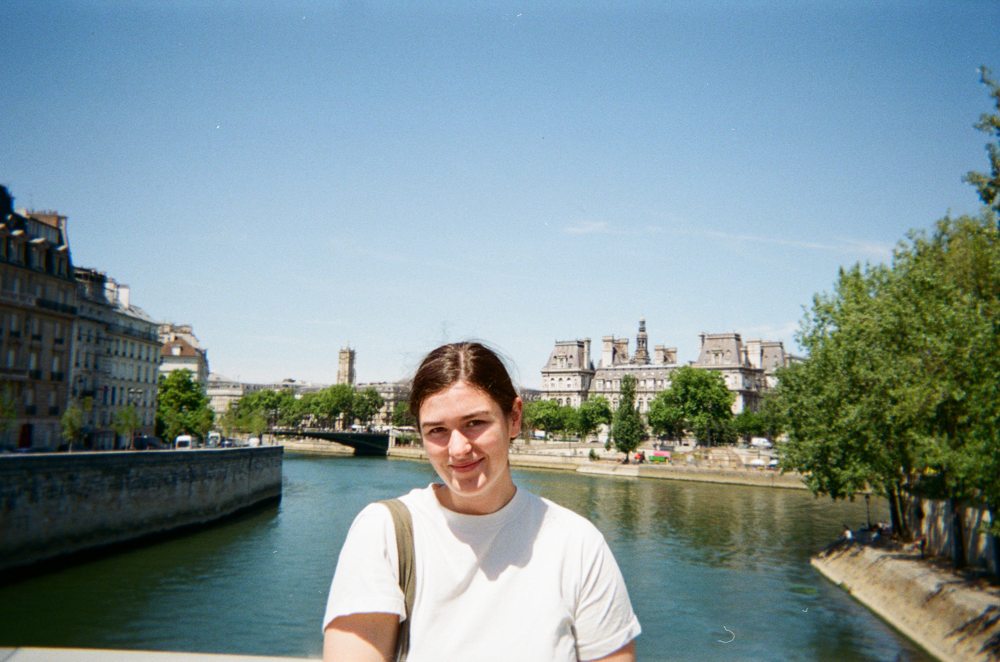

About
Hi, I'm Emma.
I'm a rising senior at Harvard where I study Physics with a secondary in English, and I am interested in the space where technical systems, physical intuition, and design meet.
My projects tend to start with curiosity: how a magnetic field can move a train, how a sensor can make a prototype responsive, how a fabricated part changes after it leaves the screen. I like work that asks me to move between analysis and making.
Outside of engineering work, I am a member of the Harvard Alpine Ski Team. I also love reading, baking, and Star Wars.
What I am building toward
Technical interests
Physics-driven thinking
Projects informed by electromagnetism, mechanics, sensing, and careful measurement.
Fabrication
3D printing, CNC, molding, casting, electronics integration, and iterative prototyping.
Design
Products that are well crafted, easy to use, and look polished.